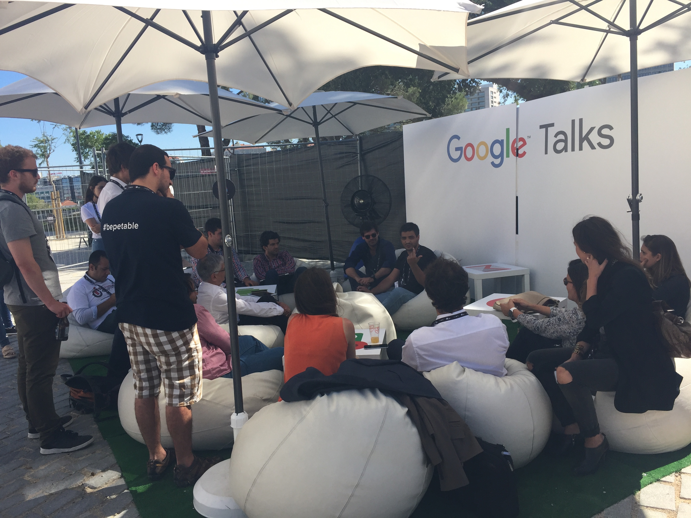
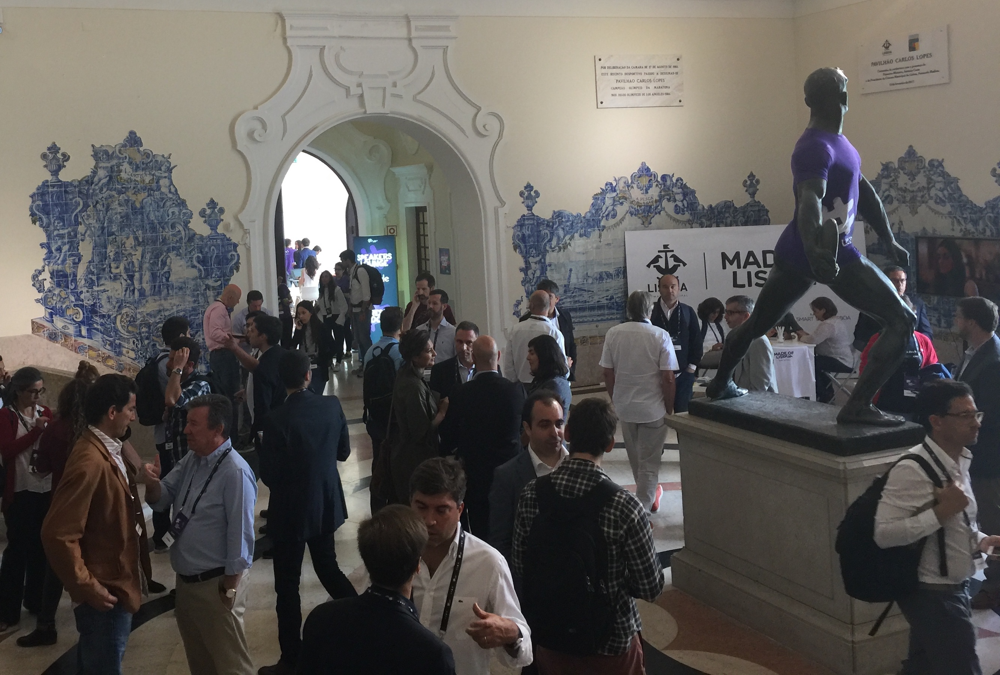
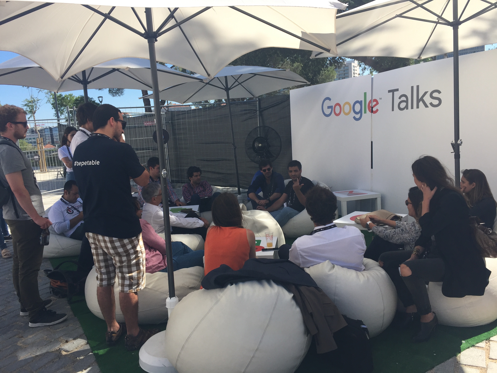
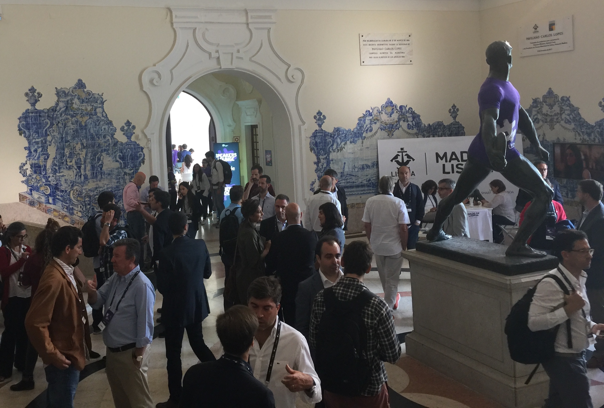

The Lisbon investment Summit was full of Investors as well as Founders. The sessions were good enough but the real value was in the conversations.

I attended the Lisbon Investment Summit on June 6 and 7 as part of the Oula.la InsurTech startup team with John Sullivan. It was the first startup conference I’d been to and I arrived hoping to have some useful conversations and understand more about the Fintech and startup spaces in Europe. As usual I wanted to focus on tech, finance and blockchains.
As well as some outstanding sessions there was a high ratio of investors to startups. This made talking to VCs, bankers and M&A lawyers really easy. I was happy to meet a London-based and Fintech-focussed VC when I sat down to have lunch, and thanks to interrupting a session to ask blockchain related questions on Day 1, a banker struck up a conversation with me over breakfast the next day. I met a lot of people across many relevant roles, and once I’ve worked through my notes and my new collection of business cards I hope to have some great follow-up meetings.
The most useful sessions for me were:
“What it means to be ambitious for founders in Europe” by Oussama Ammar from TheFamily
“Understanding Investment” by Boris Golden from Partech Ventures
“Building successful businesses on blockchain technologies” a panel discussion moderated by Kevin Loaec, founder of the Chainsmiths blockchain consultancy, and including Mir Serena Liponi from Blockchain Lab
The blockchain session was valuable because it’s unusual to meet people who have been working in the blockchain space for several years. I’m always wary of being distracted by the hype and noise around developments in the blockchain space so I appreciated hearing some informed and level-headed opinions.
The opening session included a speech from the Mayor of Lisbon and the next day opened with a speech from the Secretary of Industry. Both speeches conveyed an open and progressive attitude to international cooperation aimed at promoting and supporting founders and startups in Portugal. The warm words were supported by practical measures including tax incentives and a state-backed scheme to match amounts contributed by private investors. It was really refreshing to hear a politician extol the virtues of multinational cooperation and bringing different cultures into Portugal. I wish Britain could do this too.
On the topic of Brexit, which inevitably arose due to London’s present role as a centre of finance and innovation, it seems Europe is still expecting the UK to come to its senses, and cannot understand why it’s destroying its goodwill and reputation so thoroughly.
The two days in Lisbon were full of useful and energetic conversations and it was a great experience pitching Oula.la multiple times and talking about what we’re trying to do and how blockchains are a part of that. The opportunities to meet founders and investors are invaluable for making informed decisions. Lisbon is a beautiful city which I found easy to get around and always felt safe in. It’s also refreshingly affordable!
 


